Chapter 5 Legends
The heatmaps and simple annotations automatically generate legends which are put one the right side of the heatmap. By default there is no legend for complex annotations, but they can be constructed and added manually (Section 5.5). All legends are internally constructed by Legend() constructor. In later sections, we first introduce the settings for continuous legends and discrete legends, then we will discuss how to configure the legends associated with the heatmaps and annotations, and how to add new legends to the plot.
All the legends (no matter a single legend or a pack of legends) all belong to the Legends class. The class only has one slot grob which is the real grid::grob object or the grid::gTree object that records how to draw the graphics. The wrapping of the Legends class and the methods designed for the class make legends as single objects and can be drawn like points with specifying the positions on the viewport.
The legends for heatmaps and annotations can be controlled by heatmap_legend_param argument in Heatmap(), or annotation_legend_param argument in HeatmapAnnotation(). Most of the parameters in Legend() function can be directly set in the two arguments with the same parameter name. The details of setting heatmap legends and annotation legends parameters are introduced in Section 5.4.
5.1 Continuous legends
Since most of heatmaps contain continuous values, we first introduce the settings for the continuous legend.
Continuous legend needs a color mapping function which should be generated by circlize::colorRamp2(). In the heatmap legends and annotation legends that are automatically generated, the color mapping functions are passed by the col argument from Heatmap() or HeatmapAnnotation() function, while if you construct a self-defined legend, you need to provide the color mapping function.
The break values provided in the color mapping function (e.g. c(0, 0.5, 1) in following example) will not exactly be the same as the break values in the legends). The finally break values presented in the legend are internally adjusted to make the numbers of labels close to 5 or 6.
First we show the default style of a vertical continuous legend:
library(circlize)
col_fun = colorRamp2(c(0, 0.5, 1), c("blue", "white", "red"))
lgd = Legend(col_fun = col_fun, title = "foo")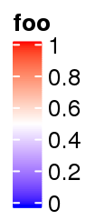
lgd is a Legends class object. The size of the legend can be obtained by ComplexHeatmap:::width() and ComplexHeatmap:::height() function.
ComplexHeatmap:::width(lgd)## [1] 9.90361111111111mmComplexHeatmap:::height(lgd)## [1] 28.0329444444444mmThe legend is actually a packed graphic object composed of rectangles, lines and texts. It can be added to the plot by draw() function. In ComplexHeatmap pacakge, you don’t need to use draw() directly on legend objects, but it might be useful if you use the legend objects in other places.
pushViewport(viewport(width = 0.9, height = 0.9))
grid.rect() # border
draw(lgd, x = unit(1, "cm"), y = unit(1, "cm"), just = c("left", "bottom"))
draw(lgd, x = unit(0.5, "npc"), y = unit(0.5, "npc"))
draw(lgd, x = unit(1, "npc"), y = unit(1, "npc"), just = c("right", "top"))
popViewport()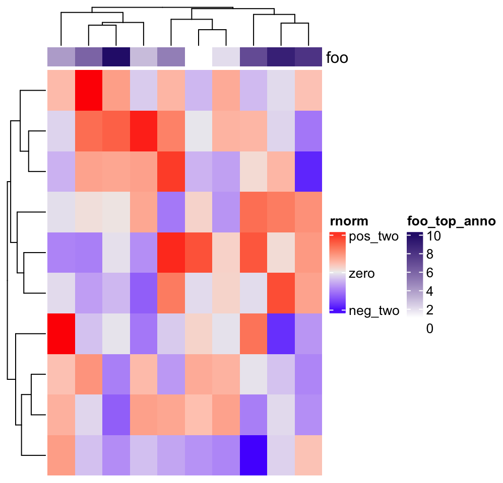
If you only want to configure the legends generated by heatmaps or annotations, you don’t need to construct the Legends object by your own. The parameters introduced later can be directly used to customize the legends by heatmap_legend_param argument in Heatmap() and annotation_legend_param argument in HeatmapAnnotation() (introduced in Section 5.4). It is still nice to see how these parameters change the styles of the legend in following examples. Following is a simple example showing how to configure legends in the heatmap and heatmap annotation.
Heatmap(matrix(rnorm(100), 10),
heatmap_legend_param = list(
title = "rnorm", at = c(-2, 0, 2),
labels = c("neg_two", "zero", "pos_two")
),
top_annotation = HeatmapAnnotation(
foo = 1:10,
annotation_legend_param = list(foo = list(title = "foo_top_anno"))
))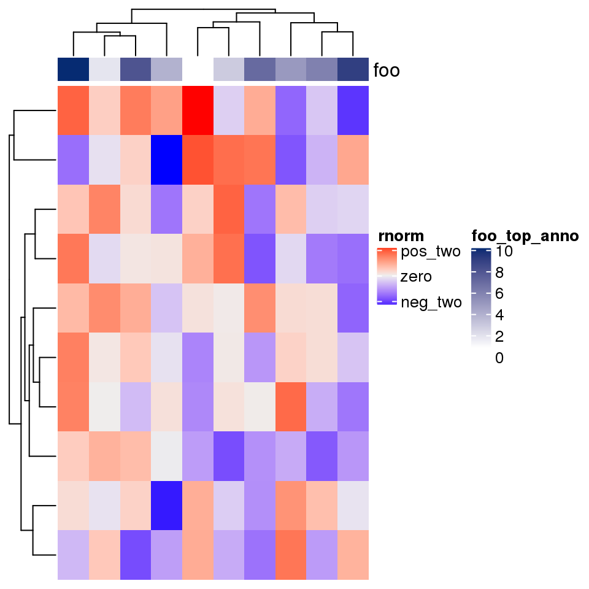
In following examples, we only show how to construct the legend object, while not show the code which draws the legends. Only remember you can use draw() function on the Legends object to draw the single legend on the plot.
For continuous legend, you can manually adjust the break values in the legend by setting at. Note the height is automatically adjusted.
lgd = Legend(col_fun = col_fun, title = "foo", at = c(0, 0.25, 0.5, 0.75, 1))
The labels corresponding to the break values are set by labels.
lgd = Legend(col_fun = col_fun, title = "foo", at = c(0, 0.5, 1),
labels = c("low", "median", "high"))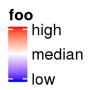
The height of the vertical continous legend is set by legend_height. legend_height can only be set for the veritcal continous legend and the value is the height of the legend body (excluding the legend title).
lgd = Legend(col_fun = col_fun, title = "foo", legend_height = unit(6, "cm"))
If it is a vertical legend, grid_width controls the widths of the legend body. grid_width is originally designed for the discrete legends where the each level in the legend is a grid, but here we use the same name for the parameter that controls the width of the legend.
lgd = Legend(col_fun = col_fun, title = "foo", grid_width = unit(1, "cm"))
The graphic parameters for the labels are controlled by labels_gp.
lgd = Legend(col_fun = col_fun, title = "foo", labels_gp = gpar(col = "red", font = 3))
The border of the legend as well as the ticks for the break values are controlled by border. The value of border can be logical or a string of color.
lgd = Legend(col_fun = col_fun, title = "foo", border = "red")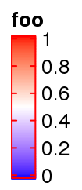
title_position controls the position of titles. For vertical legends, the value should be one of topleft, topcenter, lefttop-rot and leftcenter-rot. Following two plots show the effect of lefttop-rot title and leftcenter-rot title.
lgd = Legend(col_fun = col_fun, title = "foooooooo", title_position = "lefttop-rot",
legend_height = unit(4, "cm"))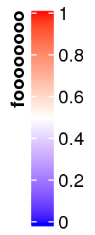
lgd = Legend(col_fun = col_fun, title = "foooooooo", title_position = "leftcenter-rot",
legend_height = unit(4, "cm"))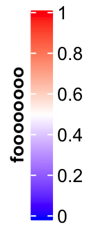
Legend titles and labels can be set as mathematical formulas.
lgd = Legend(col_fun = col_fun, title = expression(hat(beta) == (X^t * X)^{-1} * X^t * y),
at = c(0, 0.25, 0.5, 0.75, 1), labels = expression(alpha, beta, gamma, delta, epsilon))
Settings for horizontal continuous legends are almost the same as vertical legends, except that now legend_width controls the width of the legend, and the title position can only be one of topcenter, topleft, lefttop and leftcenter.
The default style for horizontal legend:
lgd = Legend(col_fun = col_fun, title = "foo", direction = "horizontal")
Manually set at:
lgd = Legend(col_fun = col_fun, title = "foo", at = c(0, 0.25, 0.5, 0.75, 1),
direction = "horizontal")
Manually set labels:
lgd = Legend(col_fun = col_fun, title = "foo", at = c(0, 0.5, 1),
labels = c("low", "median", "high"), direction = "horizontal")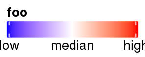
Set legend_width:
lgd = Legend(col_fun = col_fun, title = "foo", legend_width = unit(6, "cm"),
direction = "horizontal")
Set graphic parameters for labels:
lgd = Legend(col_fun = col_fun, title = "foo", labels_gp = gpar(col = "red", font = 3),
direction = "horizontal")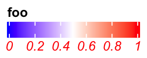
Set rotations of labels.
lgd = Legend(col_fun = col_fun, title = "foo", labels_rot = 45,
direction = "horizontal")
Title can be set as topleft, topcenter or lefttop and leftcenter.
lgd = Legend(col_fun = col_fun, title = "foooooooo", direction = "horizontal",
title_position = "topcenter")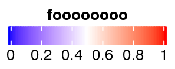
lgd = Legend(col_fun = col_fun, title = "foooooooo", direction = "horizontal",
title_position = "lefttop")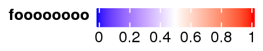
In examples we showed above, the intervals between every two break values are equal. Actually at can also be set as break values with uneuqal intervals. In this scenario, the ticks on the legend are still at the original places while the corresponding texts are shifted to get rid of overlapping. Then, there are lines connecting the ticks and the labels.
lgd = Legend(col_fun = col_fun, title = "foo", at = c(0, 0.1, 0.15, 0.5, 0.9, 0.95, 1))
If the labels do not need to be adjusted, they are still at the original places.
lgd = Legend(col_fun = col_fun, title = "foo", at = c(0, 0.3, 1),
legend_height = unit(4, "cm"))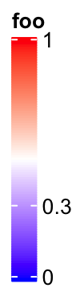
It is similar for the horizontal legends:
lgd = Legend(col_fun = col_fun, title = "foo", at = c(0, 0.1, 0.15, 0.5, 0.9, 0.95, 1),
direction = "horizontal")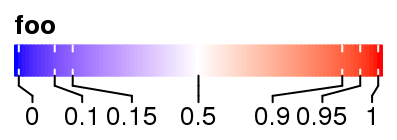
Set rotations of labels to 90 degree.
lgd = Legend(col_fun = col_fun, title = "foo", at = c(0, 0.1, 0.15, 0.5, 0.9, 0.95, 1),
direction = "horizontal", title_position = "lefttop", labels_rot = 90)
When the position of title is set to lefttop, the area below the title will also be taken into account when calculating the adjusted positions of labels.
lgd = Legend(col_fun = col_fun, title = "foo", at = c(0, 0.1, 0.5, 0.75, 1),
labels = c("mininal", "q10", "median", "q75", "maximal"),
direction = "horizontal", title_position = "lefttop")
5.2 Discrete legends
Discrete legends are used for discrete color mappings. The continuous color mapping can also be degenerated as discrete color mapping by only providing the colors and the break values.
You can either specify at or labels, but most probably you specify labels. The colors should be specified by legend_gp.
lgd = Legend(at = 1:6, title = "foo", legend_gp = gpar(fill = 1:6))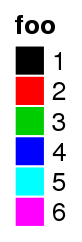
lgd = Legend(labels = month.name[1:6], title = "foo", legend_gp = gpar(fill = 1:6))
The discrete legend for continuous color mapping:
at = seq(0, 1, by = 0.2)
lgd = Legend(at = at, title = "foo", legend_gp = gpar(fill = col_fun(at)))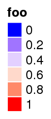
The position of title:
lgd = Legend(labels = month.name[1:6], title = "foo", legend_gp = gpar(fill = 1:6),
title_position = "lefttop")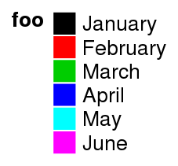
lgd = Legend(labels = month.name[1:6], title = "foo", legend_gp = gpar(fill = 1:6),
title_position = "leftcenter-rot")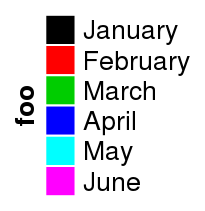
The size of grids are controlled by grid_width and grid_height.
lgd = Legend(at = 1:6, legend_gp = gpar(fill = 1:6), title = "foo",
grid_height = unit(1, "cm"), grid_width = unit(5, "mm"))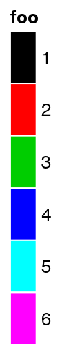
The graphic parameters of labels are controlled by labels_gp.
lgd = Legend(labels = month.name[1:6], legend_gp = gpar(fill = 1:6), title = "foo",
labels_gp = gpar(col = "red", fontsize = 14))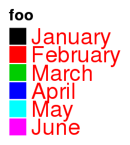
The graphic parameters of the title are controlled by title_gp.
lgd = Legend(labels = month.name[1:6], legend_gp = gpar(fill = 1:6), title = "foo",
title_gp = gpar(col = "red", fontsize = 14))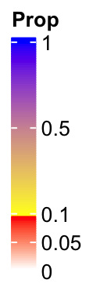
Borders of grids are controlled by border.
lgd = Legend(labels = month.name[1:6], legend_gp = gpar(fill = 1:6), title = "foo",
border = "red")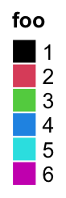
One important thing for the discrete legend is you can arrange the grids into multiple rows or/and columns. If ncol is set to a number, the grids are arranged into ncol columns.
lgd = Legend(labels = month.name[1:10], legend_gp = gpar(fill = 1:10),
title = "foo", ncol = 3)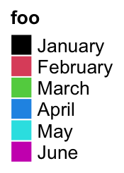
Still the title position is calculated based on the multiplt-column legend.
lgd = Legend(labels = month.name[1:10], legend_gp = gpar(fill = 1:10), title = "foo",
ncol = 3, title_position = "topcenter")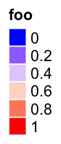
You can choose to list the legend levels by rows by setting by_row = TRUE.
lgd = Legend(labels = month.name[1:10], legend_gp = gpar(fill = 1:10), title = "foo",
ncol = 3, by_row = TRUE)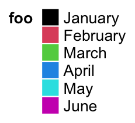
The gap between two columns are controlled by gap.
lgd = Legend(labels = month.name[1:10], legend_gp = gpar(fill = 1:10), title = "foo",
ncol = 3, gap = unit(1, "cm"))Instead of ncol, you can also specify the layout by nrow. Note you cannot use ncol and nrow at a same time.
lgd = Legend(labels = month.name[1:10], legend_gp = gpar(fill = 1:10),
title = "foo", nrow = 3)One extreme case is when all levels are put in one row and the title are rotated by 90 degree. The height of the legend will be the height of the rotated title.
lgd = Legend(labels = month.name[1:6], legend_gp = gpar(fill = 1:6), title = "foooooo",
nrow = 1, title_position = "lefttop-rot")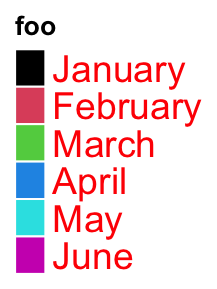
Following style a lot of people might like:
lgd = Legend(labels = month.name[1:6], legend_gp = gpar(fill = 1:6), title = "foooooo",
nrow = 1, title_position = "leftcenter")
Legend() also supports to use simple graphics (e.g. points, lines, boxplots) as legends. type argument can be specified as points or p that you can use number for pch or single-letter for pch.
lgd = Legend(labels = month.name[1:6], title = "foo", type = "points",
pch = 1:6, legend_gp = gpar(col = 1:6), background = "#FF8080")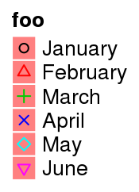
lgd = Legend(labels = month.name[1:6], title = "foo", type = "points",
pch = letters[1:6], legend_gp = gpar(col = 1:6), background = "white")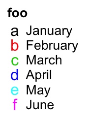
Or set type = "lines"/type = "l" to use lines as legend:
lgd = Legend(labels = month.name[1:6], title = "foo", type = "lines",
legend_gp = gpar(col = 1:6, lty = 1:6), grid_width = unit(1, "cm"))Or set type = "boxplot"/type = "box" to use boxes as legends:
lgd = Legend(labels = month.name[1:6], title = "foo", type = "boxplot",
legend_gp = gpar(fill = 1:6))
When pch is an integer number, the numbers in 26:28 correspond to following symbols:
lgd = Legend(labels = paste0("pch = ", 26:28), type = "points", pch = 26:28)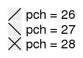
If you want more legend styles to be supported, contact me.
5.3 A list of legends
A list of legends can be constructed or packed as a Legends object where the individual legends are arranged within a certain layout. The legend list can be sent to packLegend() separatedly or as a list. The legend can be arranged either vertically or horizontally. ComplexHeatmap uses packLegend() internally to arrange multiple legends. Normally you don’t need to manually control the arrangement of multiple legends, but the following section would be useful if you want to manually construct a list of legends and apply to other plots.
lgd1 = Legend(at = 1:6, legend_gp = gpar(fill = 1:6), title = "legend1")
lgd2 = Legend(col_fun = col_fun, title = "legend2", at = c(0, 0.25, 0.5, 0.75, 1))
lgd3 = Legend(labels = month.name[1:3], legend_gp = gpar(fill = 7:9), title = "legend3")
pd = packLegend(lgd1, lgd2, lgd3)
# which is same as
pd = packLegend(list = list(lgd1, lgd2, lgd3))Simillar as single legend, you can draw the packed legends by draw() function. Also you can get the size of pd by ComplexHeatmap:::width() and ComplexHeatmap:::height().
ComplexHeatmap:::width(pd)## [1] 19.1675555555556mmComplexHeatmap:::height(pd)## [1] 72.0988333333333mmHorizontally arranging the legends simply by setting direction = "horizontal".
pd = packLegend(lgd1, lgd2, lgd3, direction = "horizontal")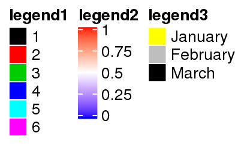
One feature of packLegend() is, e.g. if the packing is vertically and the sum of the packed legends exceeds the height specified by max_height, it will be rearragned as mutliple column layout. In following example, the maximum height is 10cm.
When all the legends are put into multiple columns, column_gap controls the space between two columns.
pd = packLegend(lgd1, lgd3, lgd2, lgd3, lgd2, lgd1, max_height = unit(10, "cm"),
column_gap = unit(1, "cm"))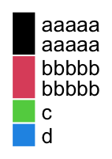
Similar for horizontal packing:
lgd1 = Legend(at = 1:6, legend_gp = gpar(fill = 1:6), title = "legend1",
nr = 1)
lgd2 = Legend(col_fun = col_fun, title = "legend2", at = c(0, 0.25, 0.5, 0.75, 1),
direction = "horizontal")
pd = packLegend(lgd1, lgd2, lgd3, lgd1, lgd2, lgd3, max_width = unit(10, "cm"),
direction = "horizontal", column_gap = unit(5, "mm"), row_gap = unit(1, "cm"))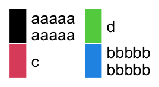
The packed legends pd is also a Legends object, which means you can use draw() to draw it by specifying the positions.
pd = packLegend(lgd1, lgd2, lgd3, direction = "horizontal")
pushViewport(viewport(width = 0.8, height = 0.8))
grid.rect()
draw(pd, x = unit(1, "cm"), y = unit(1, "cm"), just = c("left", "bottom"))
popViewport()To be mentioned again, packLegend() is used internally to manage the list of heatmap and annotation legends.
5.4 Heatmap and annotation legends
Settings for heatmap legend are controlled by heatmap_legend_param argument in Heatmap(). The value for heatmap_legend_param is a list of parameters which are supported in Legend().
m = matrix(rnorm(100), 10)
Heatmap(m, name = "mat", heatmap_legend_param = list(
at = c(-2, 0, 2),
labels = c("low", "zero", "high"),
title = "Some values",
legend_height = unit(4, "cm"),
title_position = "lefttop-rot"
))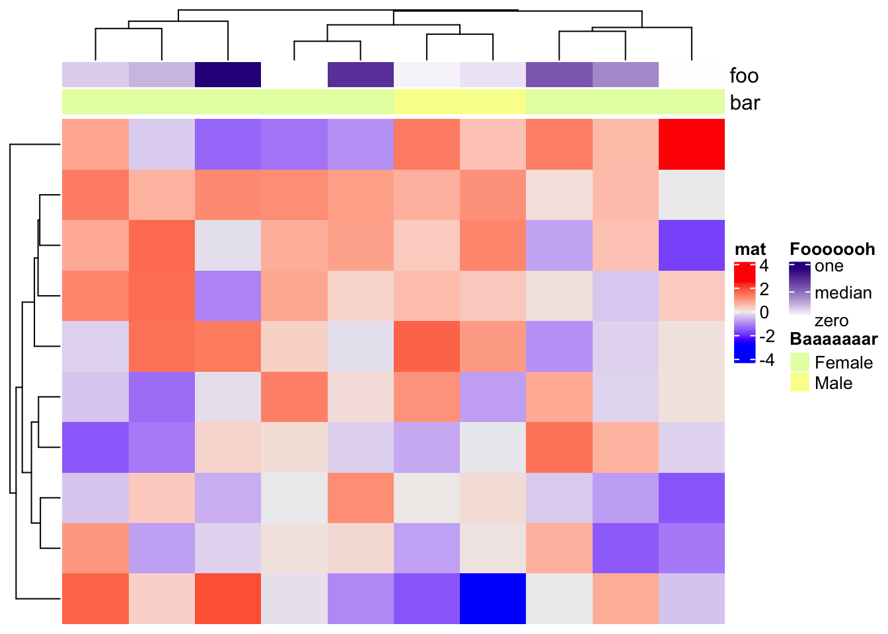
annotation_legend_param controls legends for annotations. Since a HeatmapAnnotation may contain multiple annotations, the value of annotation_legend_param is a list of configurations of each annotation.
ha = HeatmapAnnotation(foo = runif(10), bar = sample(c("f", "m"), 10, replace = TRUE),
annotation_legend_param = list(
foo = list(
title = "Fooooooh",
at = c(0, 0.5, 1),
labels = c("zero", "median", "one")
),
bar = list(
title = "Baaaaaaar",
at = c("f", "m"),
labels = c("Female", "Male")
)
))
Heatmap(m, name = "mat", top_annotation = ha)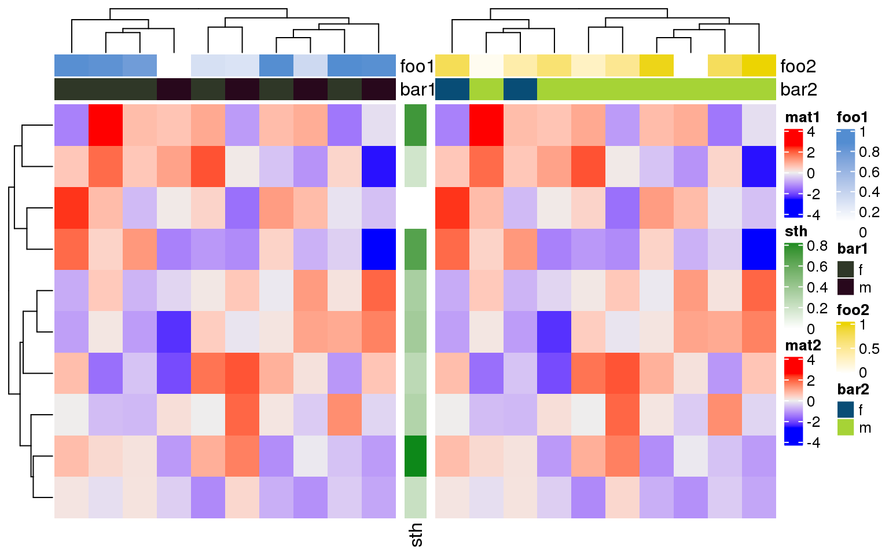
If the heatmaps are concatenated horizontally, all heatmap and row annotation legends are grouped and all column annotation legends ae grouped. The reason we assume the horizontal direction passes the main message of the plot, while the vertical direction provides secondary information.
ha1 = HeatmapAnnotation(foo1 = runif(10), bar1 = sample(c("f", "m"), 10, replace = TRUE))
ha2 = HeatmapAnnotation(foo2 = runif(10), bar2 = sample(c("f", "m"), 10, replace = TRUE))
Heatmap(m, name = "mat1", top_annotation = ha1) +
rowAnnotation(sth = runif(10)) +
Heatmap(m, name = "mat2", top_annotation = ha2)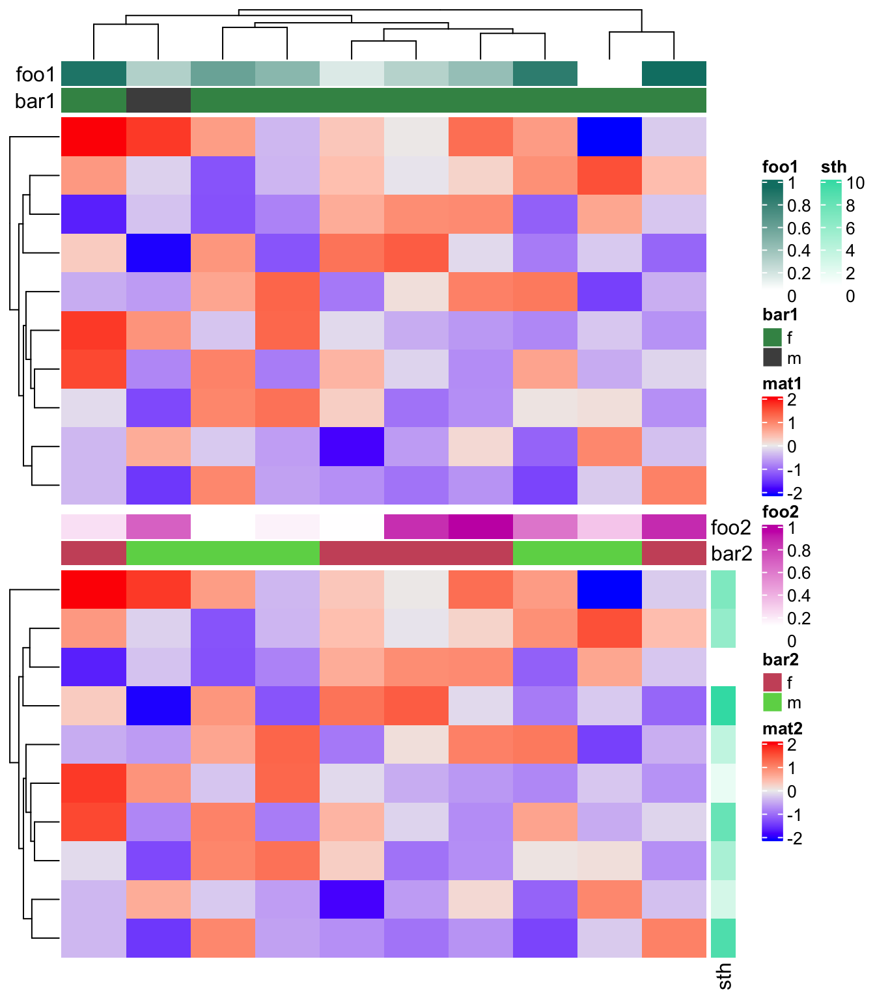
Similarlly, if the heatmaps are concatenated vertically, all heatmaps/column annotations are grouped and legends for all row annotations are grouped.
ha1 = HeatmapAnnotation(foo1 = runif(10), bar1 = sample(c("f", "m"), 10, replace = TRUE),
annotation_name_side = "left")
ha2 = HeatmapAnnotation(foo2 = runif(10), bar2 = sample(c("f", "m"), 10, replace = TRUE))
Heatmap(m, name = "mat1", top_annotation = ha1) %v%
Heatmap(m, name = "mat2", top_annotation = ha2,
right_annotation = rowAnnotation(sth = 1:10))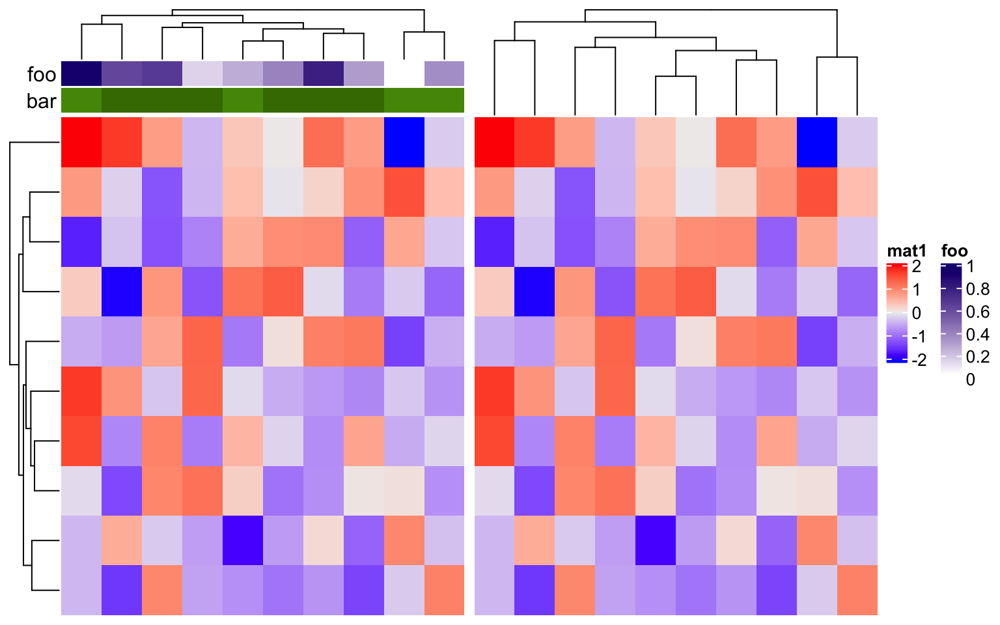
show_legend in HeatmapAnnotation() and show_heatmap_legend in Heatmap() controls whether show the legends. Note show_legend can be a single logical value, a logical vector, or a named vector which controls subset of annotations.
ha = HeatmapAnnotation(foo = runif(10),
bar = sample(c("f", "m"), 10, replace = TRUE),
show_legend = c(TRUE, FALSE), # it can also be show_legend = c(bar = FALSE)
annotation_name_side = "left")
Heatmap(m, name = "mat1", top_annotation = ha) +
Heatmap(m, name = "mat2", show_heatmap_legend = FALSE)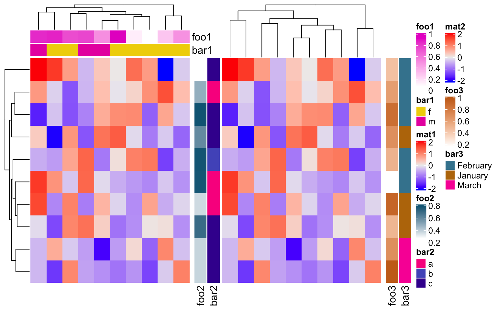
merge_legend in draw() function controlls whether to merge all the legends into a single group. Normally, when there are many annotations and heatmaps, the number of legends is always large. In this case, the legends are automatically arranged into multiple columns (or multiple rows if they are put at the bottom of the heatmaps) to get rid of being out of the figure page. If a heatmap has heatmap annotations, the order of putting legends are: legends for the left annotations, legends for the top annotations, legend of the heatmap, legends for the bottom annotations and legends for the right annotations.
ha1 = HeatmapAnnotation(foo1 = runif(10),
bar1 = sample(c("f", "m"), 10, replace = TRUE))
ha2 = rowAnnotation(foo2 = runif(10),
bar2 = sample(letters[1:3], 10, replace = TRUE))
ha3 = rowAnnotation(foo3 = runif(10),
bar3 = sample(month.name[1:3], 10, replace = TRUE))
ht_list = Heatmap(m, name = "mat1", top_annotation = ha1) +
Heatmap(m, name = "mat2", left_annotation = ha2) +
ha3
draw(ht_list, merge_legend = TRUE)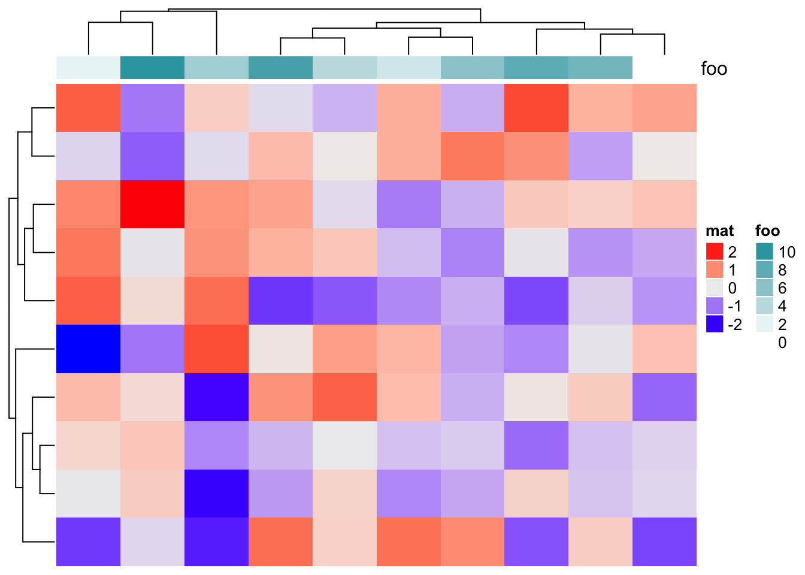
The last thing to mention is that a continuous color mapping can have a discrete legend by setting color_bar = "discrete"), both work for heatmap legends and annotation legends.
Heatmap(m, name = "mat", heatmap_legend_param = list(color_bar = "discrete"),
top_annotation = HeatmapAnnotation(foo = 1:10,
annotation_legend_param = list(
foo = list(color_bar = "discrete"))))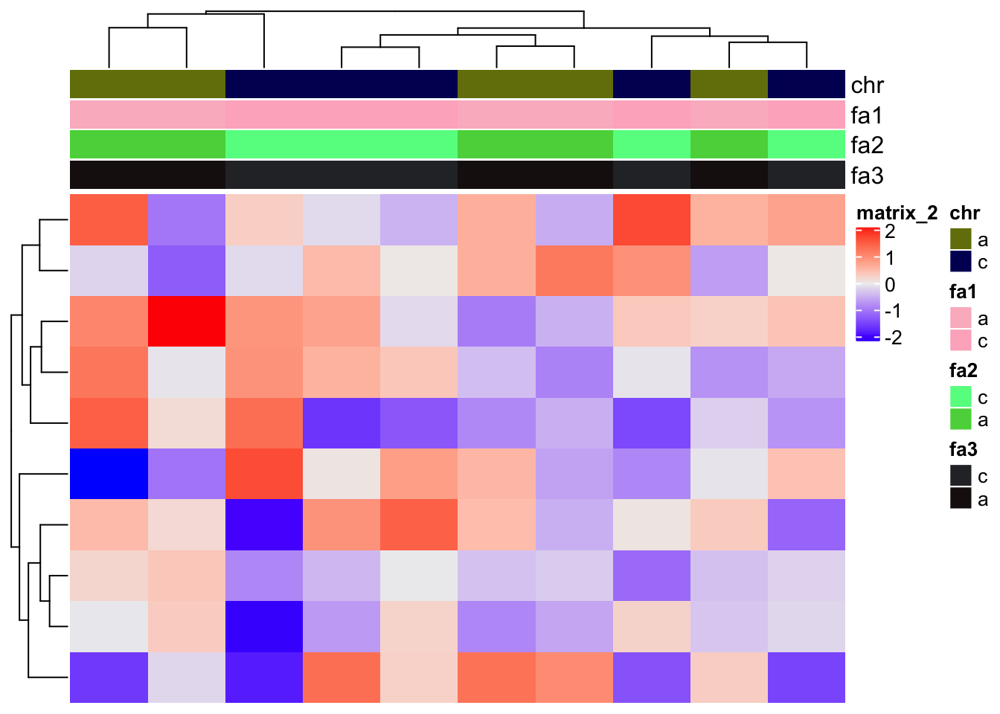
5.5 Add customized legends
The self-defined legends (constructed by Legend()) can be added to the heatmap legend list by heatmap_legend_list argument in draw() and the legends for annotations can be added to the annotation legend list by annotation_legend_list argument.
There is a nice example of adding self-defined legends in Section 10.2, but here we show a simple example.
As mentioned before, only the heatmap and simple annotations can generate legends on the plot. ComplexHeatmap provides many annotation functions, but none of them supports generating legends. In following code, we add a point annotation, a line annotation and a summary annotation to the heatmaps.
ha1 = HeatmapAnnotation(pt = anno_points(1:10, gp = gpar(col = rep(2:3, each = 5)),
height = unit(2, "cm")), show_annotation_name = FALSE)
ha2 = HeatmapAnnotation(ln = anno_lines(cbind(1:10, 10:1), gp = gpar(col = 4:5, lty = 1:2),
height = unit(2, "cm")), show_annotation_name = FALSE)
m = matrix(rnorm(100), 10)
ht_list = Heatmap(m, name = "mat1", top_annotation = ha1) +
Heatmap(m, name = "mat2", top_annotation = ha2) +
Heatmap(m[, 1], name = "mat3",
top_annotation = HeatmapAnnotation(
summary = anno_summary(gp = gpar(fill = 2:3))
), width = unit(1, "cm"))
draw(ht_list, ht_gap = unit(7, "mm"), row_km = 2)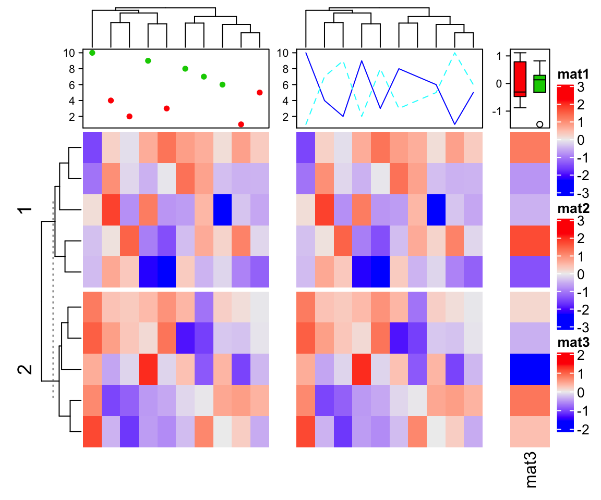
Next we construct legends for the points, the lines and the boxplots.
lgd_list = list(
Legend(labels = c("red", "green"), title = "pt", type = "points", pch = 16,
legend_gp = gpar(col = 2:3)),
Legend(labels = c("darkblue", "lightblue"), title = "ln", type = "lines",
legend_gp = gpar(col = 4:5, lty = 1:2)),
Legend(labels = c("group1", "group2"), title = "km", type = "boxplot",
legend_gp = gpar(fill = 2:3))
)
draw(ht_list, ht_gap = unit(7, "mm"), row_km = 2, annotation_legend_list = lgd_list)5.6 The side of legends
By default, the heatmap legends and annotation legends are put on the right of the plot. The side relative to the heatmaps of the two types of legends can be controlled by heatmap_legend_side and annotation_legend_side arguments in draw() function. The values that can be set for the two arguments are left, right, bottom and top.
m = matrix(rnorm(100), 10)
ha1 = HeatmapAnnotation(foo1 = runif(10), bar1 = sample(c("f", "m"), 10, replace = TRUE))
ha2 = HeatmapAnnotation(foo2 = runif(10), bar2 = sample(c("f", "m"), 10, replace = TRUE))
ht_list = Heatmap(m, name = "mat1", top_annotation = ha1) +
rowAnnotation(sth = runif(10)) +
Heatmap(m, name = "mat2", top_annotation = ha2)
draw(ht_list, heatmap_legend_side = "left", annotation_legend_side = "bottom")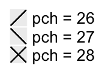
When the legends are put at the bottom or on the top, the legends are arranged horizontally. We might also want to set every single legend as horizontal legend, this needs to be set via the heatmap_legend_param and annotation_legend_param arguments in Heatmap() and HeatmapAnnotation() functions:
ha1 = HeatmapAnnotation(foo1 = runif(10), bar1 = sample(c("f", "m"), 10, replace = TRUE),
annotation_legend_param = list(
foo1 = list(direction = "horizontal"),
bar1 = list(nrow = 1)))
ha2 = HeatmapAnnotation(foo2 = runif(10), bar2 = sample(c("f", "m"), 10, replace = TRUE),
annotation_legend_param = list(
foo2 = list(direction = "horizontal"),
bar2 = list(nrow = 1)))
ht_list = Heatmap(m, name = "mat1", top_annotation = ha1,
heatmap_legend_param = list(direction = "horizontal")) +
rowAnnotation(sth = runif(10),
annotation_legend_param = list(sth = list(direction = "horizontal"))) +
Heatmap(m, name = "mat2", top_annotation = ha2,
heatmap_legend_param = list(direction = "horizontal"))
draw(ht_list, merge_legend = TRUE, heatmap_legend_side = "bottom",
annotation_legend_side = "bottom")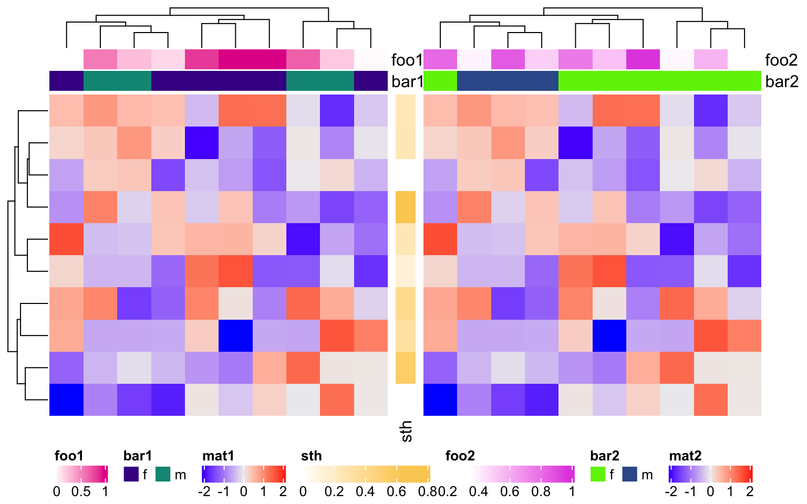